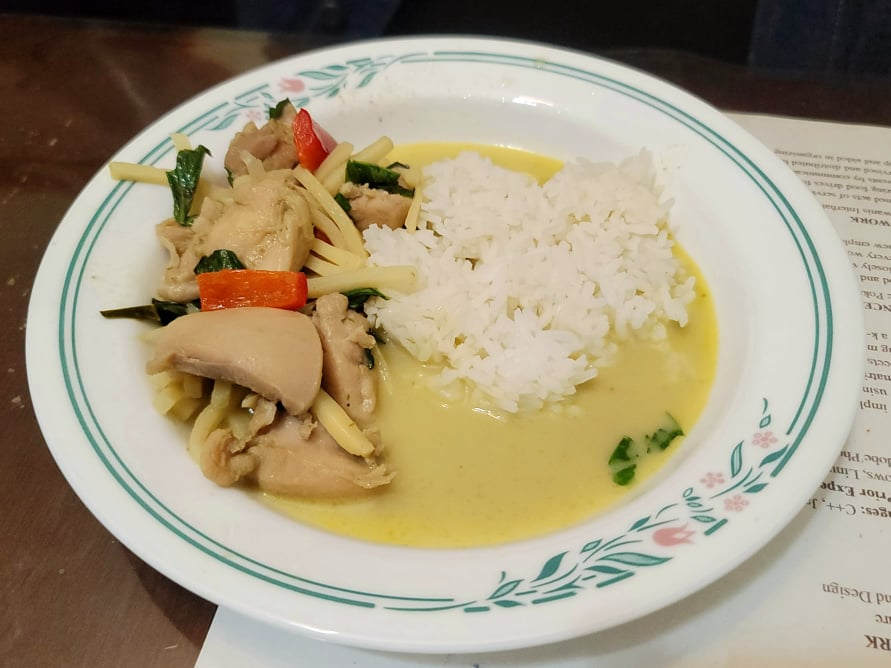

Green Curry

Ingredients:
- 1 lb Chicken thighs, cubed
- 1 13.5 oz can Coconut milk, divided
- 50g Green curry paste, 3 tbsp
- 1 cup Chicken stock, unsalted
- 2 tbsp Sugar
- 1 1/2 - 2 tbsp Fish sauce
- 4 Kaffir lime leaves, thinly sliced
- 1 1/2 cup Bamboo shoots, sliced or strips
- 1 Spur chili or 1/4 Red bell pepper, julienned
- 1 cup Thai basil, chopped
Instructions:
- Pour 3/4 cup of coconut milk into a medium pot over medium heat. Bring to a boil and let reduce until very thick and the coconut oil starts to separate from the coconut milk.
- Add in the green curry paste and sauté until fragrant, about 2 minutes.
- Add in the chicken and sauté until the chicken just turns white.
- Mix in the rest of the coconut milk and the chicken stock, sugar, fish sauce, and kaffir lime leaves. Bring to a boil and then reduce to a simmer. Let cook for 10-15 minutes or until the sauce reduces to your liking.
- Mix in the bamboo shoots and pepper. Bring back to a boil and then remove from the heat. Taste and adjust seasonings for fish sauce or salt.
- Mix in the thai basil and serve immediately.